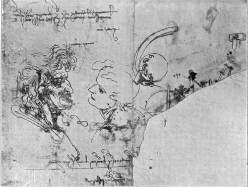
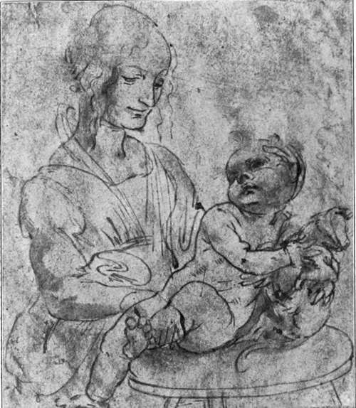

The Records Up To 1493. Part 5
Description
This section is from the book "Leonardo Da Vinci", by Edward McCurdy. Also available from Amazon: Leonardo Da Vinci.
The Records Up To 1493. Part 5
His time was spent in study and observation. He speaks in his MSS. of consulting Vitellio's treatise on Mathematics in the Library. He sketched churches, e.g., Santa Maria in Pertica di Pavia. He described the cre-nellation of the castle. Watching the rebuilding of a part of the city wall which stood on the river bank, he noted the varying effects of time in the various woods used in the piles of its foundations.
He also studied the antique equestrian statue of Regisole, which the "Anonimo" described as representing Odoacer, King of the Goths.1 It stood in the Piazza del Duomo until its destruction in 1796. The composition is preserved in a fresco in S. Teodoro at Pavia. Dr. Muller-Walde connects such drawings as seem to owe suggestion to it with the Trivulzio monument, a project of his later years. To me it seems more probable that notes and sketches were made during this residence at Pavia, and refer to the Sforza statue, which he recommenced in April of the same year.
In February, 1489, he had constructed the scenery for a representation of " II Paradiso " by Bernardo Bellin-cioni, written in honour of the marriage of Gian Galeazzo with Isabella of Aragon. It opened with an address by Jove to the planets, after which they all descended to earth to praise the Duchess Isabella. After considerable debate Apollo presents the lady with a book of words, and the play ends with songs by the Graces and the Virtues.
1 I.e., " The Anonimo (Morelliano)." Edit. Williamson, p. 69.
Plate 4. Study Of Heads With Note Dated 1478
Brogi photo - Uffizi Gallery, Florence
In January, 1491, he was present in the house of Galeazzo di San Severino to arrange the festival of the tournament, and records rather helplessly the thefts and malpractices of his apprentice, Giacomo, aged ten, on this occasion as also repeatedly before at Pavia.1
A sketch of pulleys and cords inscribed " in the Cathedral for the pulley of the Nail of the Cross,"2 is cited by Amoretti to show that in 1489 Leonardo constructed an apparatus of pulleys and cords to transport the relic of the Sacred Nail to a more venerable place in the cathedral. It is not, however, possible to ascertain on what evidence Amoretti relied in fixing the date of the ceremony, and Dr. Richter dates the MS; as written in 1502.
His employment as architect in the service of the Court is to be inferred from a drawing of a dome-shaped pavilion inscribed " pavilion of the garden of the Duchess of Milan," and another of a ground-plan " foundation of the pavilion which is in the middle of the labyrinth of the Duke of Milan." On the same page3 is the date 10 July, 1492. Such a pavilion in the labyrinth of the garden of the castle existed in 1480, and was then described by Giovanni Ridolfi,4 son of the Florentine orator, who stated the foundation to be of brick, the rest being presumably of more fragile material. Leonardo's drawing may have been a sketch for a more solid structure in its stead. Other notes5 relate to the construction of a bath for the Duchess Isabella, the wife of Gian Galeazzo.
1 MSS. Inst. C, 15 a.
2 MSS. Inst. L., 15 a.
3 MSS. Inst. B., 12 a.
4 MS. in Bibl. Magliab., M.-W., Bei., i. 71.
5 MSS. Inst. B., 34, and C. A., 104 r. b.
It has been assumed that this bath was in the pavilion, and therefore the notes refer to parts of the same work; but beyond the fact that at the presumed date of the pavilion the " Duchess of Milan " would be the Duchess Isabella, there is nothing to connect what may have been entirely separate commissions.
To this same period of varied employment in court service belongs the earliest of the treatises in which he commenced to embody the results of his scientific study of the problems underlying the practice of art. " On the 2nd day of April, 1489, the book entitled 'Concerning the human figure'" 1
The influence of Verrocchio, in whom the scientist wrestled for mastery with the artist, predominating in the study of protruding tendons in the gaunt fleshless left arm of the S. John in the picture in the Accademia, was instrumental in first leading him to regard the study of anatomy as a necessary part of the artist's equipment. How far the result of such studies was already perceptible in his art even before leaving Florence is visible in the emaciated figure of S. Jerome in the Vatican, and in certain of the heads in the Adoration.
His zeal for the subject was stimulated during his residence in Pavia and continued for years afterwards. When in Rome in 1515 he was still the "disciple of experience," studying the human figure from the life by the practice of dissection.
The supremely subtle rendering of the effects of light and shade constitutes perhaps the most fundamental difference between the works which he executed after his removal to Milan and those of his Florentine contemporaries. The study had already occupied his thoughts while in Florence, and the result is in evidence in the Adoration.
1 Windsor mss., R. 1370 (R. = Richter: "Literary Works of L. da v.").
Plate 5. Study For A Picture Of The Virgin And Child With Cat
Brogi photo - Uffizi Gallery, Florence
At Milan, however, in this period of many undertakings the results of his study of the problem assumed literary form. The date is fixed by a note in the MSS. of the Institut C. 15: "On the 23rd of April, 1490, I commenced this book and recommenced the horse."
The MS. in which the note occurs treats of " light and shade," the contents being intended to form part of the " Trattato della Pittura."
Continue to:
Tags
leonardo da vinci, pictures, drawings, galleries, statues, da vinci